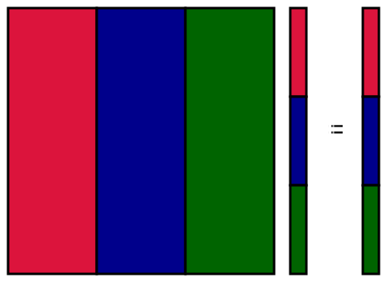
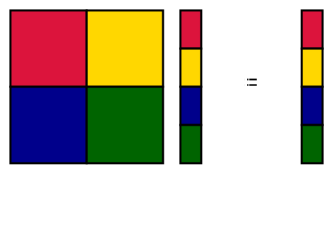

Applications of Parallel Computers
Parallel matrix multiply
Prof David Bindel
Please click the play button below.
Matrix vector product
Simple \(y = Ax\) involves two indices: \[
y_i = \sum_{j} A_{ij} x_j
\] Sums can go in any order!
All right. Let’s set the scene by considering how we might organize a dense matrix-vector product in a distributed memory setting. There are only two indices involved here, and one sum per row. But we can organize the computation of the terms, and their ultimate reduction across rows, in any way we want!
Matrix vector product
Organize \(y = Ax\) around rows or columns:
% Row-oriented
for i = 1:n
y(i) = A(i,:)*x;
end
% Col-oriented
y = 0;
for j = 1:n
y = y + A(:,j)*x(j);
end... or deal with index space in other ways!
We typically think about matrix vector products in two different ways, depending on whether the outer loop is across rows or across columns. The first approach (the one oriented around rows) views the result of a matrix vector product as a series of dot products, one for each row. The second approach (The one oriented around columns) views the result as taking a linear combination of the columns of A.
Of course, we can do more complicated things that are somewhere in between! You might even have some ideas how to do this based on your matrix multiply project experience. But first, let’s think through how the row-oriented or column-oriented view of matrix-vector products might play out in a distributed memory setting.
Parallel matvec: 1D row-blocked
Broadcast \(x\) , compute rows independently.
Maybe the first parallel algorithm that would come to mind involves partitioning everything (A, x, and y) by rows. In this case, we need everyone to get all of x, and then the remainder of the computation can be done independently at each processor.
Parallel matvec: 1D row-blocked
Allgather(xlocal, xall)
ylocal = Alocal * xall
Here’s how we might express this in MPI-like pseudocode. The first stage is a vector all-gather, where each processor shares its local part of x on input and gets out the overall x vector on output. Then we compute the local part of y as the local part of A times all of x.
Parallel matvec: 1D col-blocked

Compute partial matvecs and reduce.
Another way we might do things is to partition the matrix by columns. In this case, we start with independent matrix-vector products, where the columns owned by each processor are multiplied by that processor’s part of x. Then we do reductions in order to sum together all the contributions of these partial matvecs.
Parallel matvec: 1D col-blocked
z = Alocal * xlocal
for j = 1:p
Reduce(sum, z[i], ylocal at proc i)
end
Here’s that same idea, expressed in MPI-like pseudocode. Start with a local matrix vector product, and then sum up all the contributions. Note that we have one reduction per processor, since each processor gets a piece of the output vector.
Parallel matvec: 2D blocked

Involves broadcast and reduction
... but with subsets of processors
It will not surprise you that we can mix and match these concepts! For example, consider a case where we partition the matrix as a block 2-by-2 matrix, where each of the four blocks belongs to a different processor. Then we have to do both some broadcasts to make sure that everyone gets the pieces of x that they need, and some reductions in order to accumulate the contributions to y.
It’s maybe worth pausing here to think about the communication patterns needed. Not everyone needs all of x; and not everyone contributes to all of y. Book-keeping in this type of algorithm can be a bit fiddly!
Parallel matmul
Basic operation: \(C = C+AB\)
Computation: \(2n^3\) flops
Goal: \(2n^3/p\) flops per processor, minimal communication
Two main contenders: SUMMA and Cannon
Having warmed up with the matrix-vector product case, let’s move now to matrix-matrix products. Actually, we usually do a matrix-matrix product with addition; this is the operation known as DGEMM. We know that we are going to do 2n^3 flops overall; our goal is to evenly divide this work across processors, and do as little communication as possible.
There are two main contendors for distributed memory matrix-matrix multiply: SUMMA and Cannon’s algorithm. But these are a little complicated, and maybe it’s worth first describing a simpler algorithm as a straw man.
1D layout
Block MATLAB notation: \(A(:,j)\) means \(j\) th block column
Processor \(j\) owns \(A(:,j)\) , \(B(:,j)\) , \(C(:,j)\)
\(C(:,j)\) depends on all of \(A\) , but only \(B(:,j)\) How do we communicate pieces of \(A\) ?
So, let’s consider a 1D layout of the problem. We want to compute C += A*B, where each processor owns column stripes of A, B, and C. We’ll use pseudo-MATLAB notation to indicate blocks of the matrices. In this layout, to compute the jth block column of C, we only need the jth block column of B; but we need all of A! How do we make sure that everyone can get that column?
1D layout on ring
Every process \(j\) can send data to \(j+1\) simultaneously
Pass slices of \(A\) around the ring until everyone sees the whole matrix (\(p-1\) phases).
Maybe the simplest thing we can do is to use the “pass it around” protocol that we discussed when talking about all-to-all communication. Each processor receives a piece of A from the previous processor in the ring and sends their current piece to the next processor in the ring. Ideally, these communications should overlap with the computation of the current piece of A.
1D layout on ring
tmp = A(:,myproc)
C(myproc) += tmp*B(myproc,myproc)
for j = 1 to p-1
sendrecv tmp to myproc+1 mod p,
from myproc-1 mod p
C(myproc) += tmp*B(myproc-j mod p, myproc)Performance model?
Here’s that idea expressed in pseudocode. All right, the pseudocode isn’t exactly what I just said – when I spoke, I described overlapping communication and computation, and this pseudocode doesn’t do that yet. But it’s essentially the right idea.
1D layout on ring
In a simple \(\alpha-\beta\) model, at each processor:
\(p-1\) message sends (and simultaneous receives)Each message involves \(n^2/p\) data
Communication cost: \((p-1) \alpha + (1-1/p) n^2 \beta\)
If we ignore the computational cost, how much time are we spending just communicating data in this algorithm? Let’s use a simple alpha-beta type of model. Each message is passing n^2/p data, and we assume all the messages in a phase can overlap. There are p-1 communication phases, so the total cost should be p-1 latencies plus p-1 times n^2/p over the bandwidth.
Just paying attention to bandwidth, the total communication volume scales about like n^2. And the computation cost behaves like n^3/ p. So communication is proportional to p/n times the computation.
How can we do better than this?
Outer product algorithm
Recall outer product organization:
for k = 0:s-1
C += A(:,k)*B(k,:);
end
Recall that for matrix-matrix products, there are three nested loops, and we get different ways of thinking about the algorithm based on the loop order. The “outer product” algorithm shown here comes from thinking about the contraction index (the one that sits between A and B) as the outer algorithm. This is equivalent to saying that the matrix-matrix product is a sum of outer products between columns of A and the corresponding rows of B.
Outer product algorithm
Parallel: Assume \(p = s^2\) processors, block \(s \times s\) matrices.\(2 \times 2\) example: \[\begin{bmatrix}
C_{00} & C_{01} \\
C_{10} & C_{11}
\end{bmatrix} =
\begin{bmatrix}
A_{00} B_{00} & A_{00} B_{01} \\
A_{10} B_{00} & A_{10} B_{01}
\end{bmatrix} +
\begin{bmatrix}
A_{01} B_{10} & A_{01} B_{11} \\
A_{11} B_{10} & A_{11} B_{11}
\end{bmatrix}
\]
Processor for each \((i,j)\) \(\implies\) parallel work for each \(k\) !
Note everyone in row \(i\) uses \(A(i,k)\) at once,\(j\) uses \(B(k,j)\) at once.
All right, now let’s take this to the parallel setting. Suppose we partition A, B, and C as block s-by-s matrices. For concreteness, we’ll do an example with s = 2. The parallel outer product algorithm involves s phases, where in phase k everyone is using a piece of block column k of A, and a piece of block column k of B. And we can share the relevant pieces around by broadcasting them across rows and columns.
Parallel outer product (SUMMA)
for k = 0:s-1
for each i in parallel
broadcast A(i,k) to row
for each j in parallel
broadcast A(k,j) to col
On processor (i,j), C(i,j) += A(i,k)*B(k,j);
end
Here’s the pseudocode. At each phase, we have two sets of broadcasts: one to send pieces of column k of A across the rows in our processor grid, the other to send pieces of row k of B. Then each processor does a multiplication and accumulate of the piece that it received.
Parallel outer product (SUMMA)
If we have tree along each row/column, then
\(\log(s)\) messages per broadcast\(\alpha + \beta n^2/s^2\) per message\(2 \log(s) (\alpha s + \beta n^2/s)\) total communicationCompare to 1D ring: \((p-1) \alpha + (1-1/p) n^2 \beta\)
Note: Same ideas work with block size \(b < n/s\)
How much does this cost? Well, we haven’t talked in detail about how broadcast is implemented in hardware, but it frequently ends up looking like point-to-point messages down a tree. If we do implement broadcast like this, there are log s messages per broadcast, each of which we might model with the usual alpha-beta approach. Adding up the message costs, we have something that involves 2 s log s latencies and a bandwidth cost proportional to n^2/s log s. Compare this to the bandwidth cost in the 1D case, which was proportional to n^2/p! So we’re apparently making better use of our network fabric.
Of course, this type of communication model assumes a particular type of implementation for broadcast. It’s about right for a lot of implementations.
Cannon’s algorithm
SUMMA + “pass it around?”
The one slightly annoying thing about SUMMA is that we are doing lots of broadcast operations. If we have a large number of processors, the log s multiplier on the number of point-to-point messages might be annoying. But there’s a clever way of rearranging the products that lets us keep the advantages of SUMMA and the broadcast-free “pass-it-around” communication pattern that we saw with the 1D layout. This is the heart of Cannon’s algorithm.
Cannon’s algorithm
Idea: Reindex products in block matrix multiply \[\begin{aligned}
C(i,j) &= \sum_{k = 0}^{p-1} A(i,k) B(k,j) \\
&= \sum_{k = 0}^{p-1} A(i,\, k+i+j \mod p) \; B(k+i+j \mod p, j)
\end{aligned}\] For a fixed \(k\) , a given block of \(A\) (or \(B\) ) is needed for contribution to exactly one \(C(i,j)\) .
The idea of Cannon’s algorithm is to reindex things, so that instead of working on inner loop index k all at once, the processor at (i,j) works on inner loop index k + i + j (mod p). The processor will still see all the contributing blocks from row i of A and column j of B, but it will see them at different times from the other processors that need those blocks.
Cannon’s algorithm
\[\begin{bmatrix}
C_{00} & C_{01} \\
C_{10} & C_{11}
\end{bmatrix} =
\begin{bmatrix}
A_{00} B_{00} & A_{01} B_{11} \\
A_{11} B_{10} & A_{10} B_{01}
\end{bmatrix} +
\begin{bmatrix}
A_{01} B_{10} & A_{00} B_{01} \\
A_{10} B_{00} & A_{11} B_{11}
\end{bmatrix}\]
It’s again useful to be concrete, so here’s the 2-by-2 version of Cannon’s. Note that the processor at index (0,1) starts with B_11 and ends with B_01, while the processor at index (1,1) starts with B_01 and ends with B_11.
Cannon’s algorithm
% Move A(i,j) to A(i,i+j)
for i = 0 to s-1
cycle A(i,:) left by i
% Move B(i,j) to B(i+j,j)
for j = 0 to s-1
cycle B(:,j) up by j
for k = 0 to s-1
in parallel;
C(i,j) = C(i,j) + A(i,j)*B(i,j);
cycle A(:,i) left by 1
cycle B(:,j) up by 1
More generally, Cannon’s algorithm starts with a cyclic shift in each row of A (by the row index) and in each column of B (by the column index). After that, we do the “pass it around” protocol on rows and columns, and all the data gets to where it needs to go. Book-keeping!
Cost of Cannon
Assume 2D torus topology
Initial cyclic shifts: \(\leq s\) messages each (\(\leq 2s\) total)
For each phase: \(2\) messages each (\(2s\) total)
Each message is size \(n^2/s^2\)
Communication cost: \(4s(\alpha + \beta n^2/s^2) = 4(\alpha s + \beta n^2/s)\)
This communication cost is optimal!
All right, what is the communication cost here? If we have something like a 2D torus topology, we can overlap almost all the messages in Cannon. Because we’re sending point-to-point messages instead of broadcasting, we get a log s factor improvement over SUMMA. This turns out to be optimal in some sense. But Cannon’s algorithm requires that the processors form a square grid, where SUMMA allows more flexible layout. And SUMMA is just simpler to think about! So often SUMMA gets used instead of Cannon.
Speedup and efficiency
Recall \[\begin{aligned}
\mathrm{Speedup} & := t_{\mathrm{serial}} / t_{\mathrm{parallel}} \\
\mathrm{Efficiency} & := \mathrm{Speedup}/p
\end{aligned}\]
What’s the punchline of all this? Well, we are ultimately interested in the parallel speedup, which we can also express in terms of the efficiency of our code - perfect speedup corresponds to 100 percent efficiency.
Speedup and efficiency
1D layout
\(\left( 1+O\left( \frac{p}{n} \right) \right)^{-1}\)
SUMMA
\(\left( 1+O\left( \frac{\sqrt{p} \log p}{n} \right) \right)^{-1}\)
Cannon
\(\left (1+O\left( \frac{\sqrt{p}}{n} \right) \right)^{-1}\)
Assuming no overlap of communication and computation.
Assuming that we are not allowed to overlap communication and computation, and that we have big matrices relative to the number of processors, the efficiency of the 1D layout is 1/(1+O(p/n)). For SUMMA, we replace the p by sqrt(p) log p; and for Cannon, we replace the p by sqrt(p).
Of course, these complexities should be taken with a big grain of salt. In particular, they assume something about the network topology. Nonetheless, the general idea is right.
If I may end with a pun: to sum up, use SUMMA!
Talk to you in another slide deck soon.